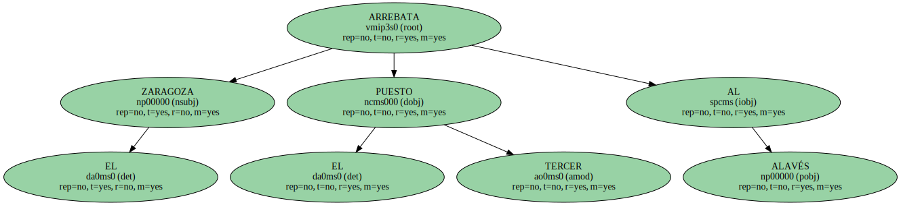
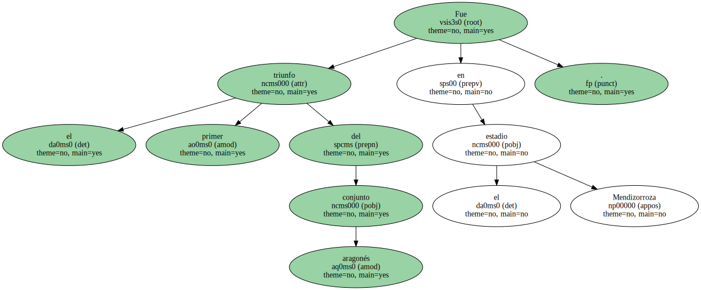
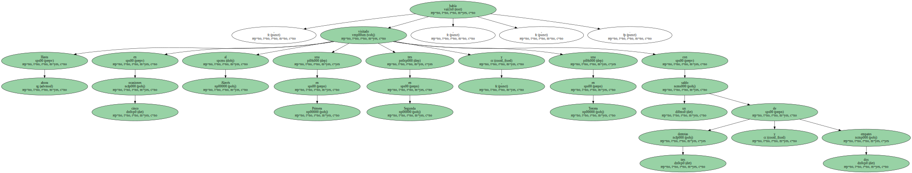

EL ZARAGOZA ARREBATA EL TERCER PUESTO AL.
El Zaragoza , gracias a dos tantos del paraguayo Roberto Miguel `Toro` Acuña , se hizo con tres puntos en su visita a Vitoria ( 0-2 ) y arrebató el tercer puesto de la clasificación al Alavés , que llevaba siete jornadas sin perder.

Fue el primer triunfo del conjunto aragonés en el estadio Mendizorroza.
Hasta ahora , había visitado en cinco ocasiones al Alavés , una en Primera , tres en Segunda y una en Tercera , con un saldo de tres derrotas y dos empates.
